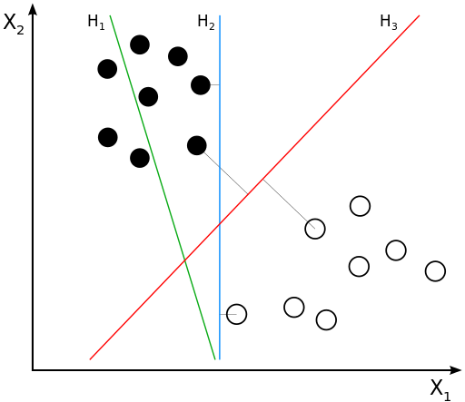
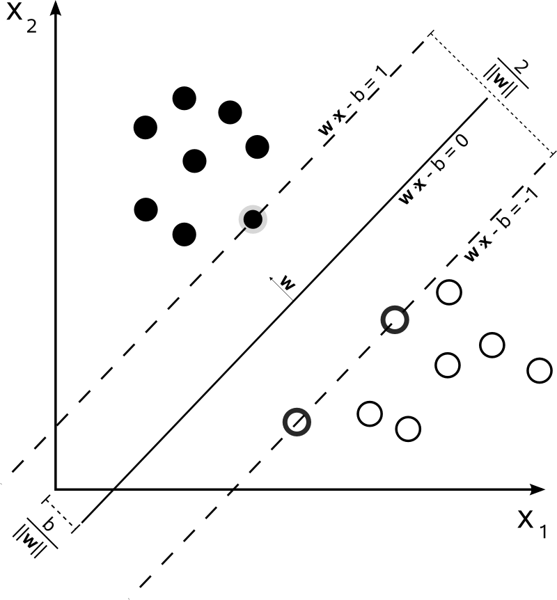
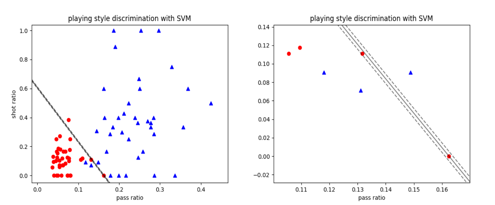
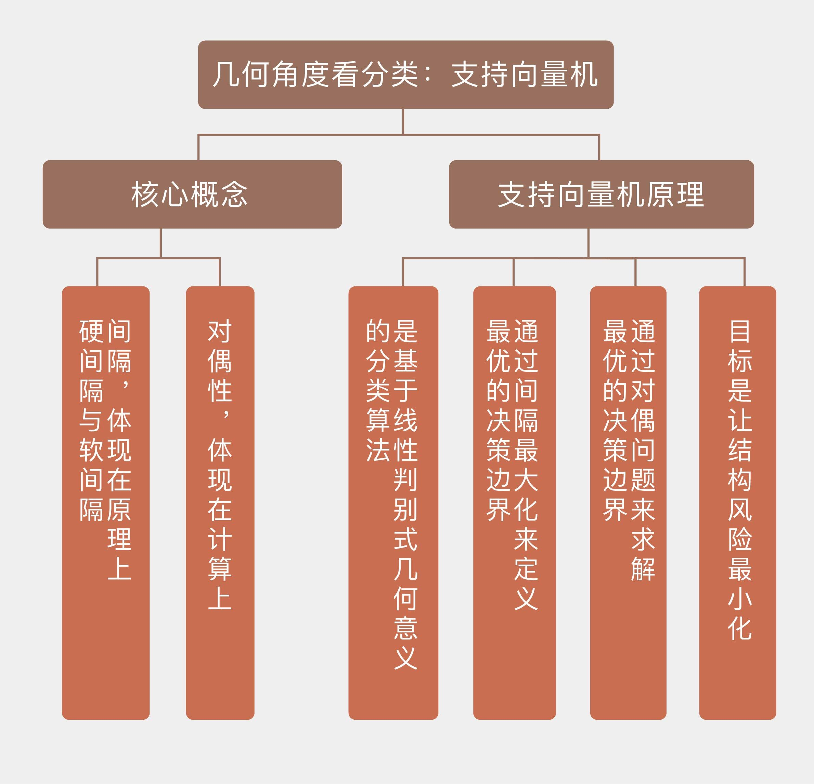

- 00 开篇词 打通修炼机器学习的任督二脉.md.html
- 01 频率视角下的机器学习.md.html
- 02 贝叶斯视角下的机器学习.md.html
- 03 学什么与怎么学.md.html
- 04 计算学习理论.md.html
- 05 模型的分类方式.md.html
- 06 模型的设计准则.md.html
- 07 模型的验证方法.md.html
- 08 模型的评估指标.md.html
- 09 实验设计.md.html
- 10 特征预处理.md.html
- 11 基础线性回归：一元与多元.md.html
- 12 正则化处理：收缩方法与边际化.md.html
- 13 线性降维：主成分的使用.md.html
- 14 非线性降维：流形学习.md.html
- 15 从回归到分类：联系函数与降维.md.html
- 16 建模非正态分布：广义线性模型.md.html
- 17 几何角度看分类：支持向量机.md.html
- 18 从全局到局部：核技巧.md.html
- 19 非参数化的局部模型：K近邻.md.html
- 20 基于距离的学习：聚类与度量学习.md.html
- 21 基函数扩展：属性的非线性化.md.html
- 22 自适应的基函数：神经网络.md.html
- 23 层次化的神经网络：深度学习.md.html
- 24 深度编解码：表示学习.md.html
- 25 基于特征的区域划分：树模型.md.html
- 26 集成化处理：Boosting与Bagging.md.html
- 27 万能模型：梯度提升与随机森林.md.html
- 28 最简单的概率图：朴素贝叶斯.md.html
- 29 有向图模型：贝叶斯网络.md.html
- 30 无向图模型：马尔可夫随机场.md.html
- 31 建模连续分布：高斯网络.md.html
- 32 从有限到无限：高斯过程.md.html
- 33 序列化建模：隐马尔可夫模型.md.html
- 34 连续序列化模型：线性动态系统.md.html
- 35 精确推断：变量消除及其拓展.md.html
- 36 确定近似推断：变分贝叶斯.md.html
- 37 随机近似推断：MCMC.md.html
- 38 完备数据下的参数学习：有向图与无向图.md.html
- 39 隐变量下的参数学习：EM方法与混合模型.md.html
- 40 结构学习：基于约束与基于评分.md.html
- 如何成为机器学习工程师？.md.html
- 总结课 机器学习的模型体系.md.html
- 总结课 贝叶斯学习的模型体系.md.html
- 结课 终有一天，你将为今天的付出骄傲.md.html
- 捐赠
17 几何角度看分类：支持向量机
前文中介绍过的逻辑回归是基于似然度的分类方法，通过对数据概率建模来得到软输出。而在另一类基于判别式的硬输出分类方法中，代表性较强的就得数今天要介绍的支持向量机了。
支持向量机并不关心数据的概率，而是要基于判别式找到最优的超平面作为二分类问题的决策边界。其发明者弗拉基米尔·瓦普尼克（Vladimir Vapnik）用一句名言清晰地解释了他的思想：能走直线就别兜圈子。
当然啦，这是“信达雅”的译法，老瓦的原话是“不要引入更加复杂的问题作为解决当前问题的中间步骤（When trying to solve some problem, one should not solve a more difficult problem as an intermediate step. ）”。
在他看来，估算数据的概率分布就是那个作为中间步骤的复杂问题。这就像当一个人学习英语时，他只要直接报个班或者自己看书就行了，而不需要先学习诘屈聱牙的拉丁语作为基础。既然解决分类问题只需要一个简单的判别式，那就没有必要费尽心机地去计算似然概率或是后验概率。正是这化繁为简的原则给支持向量机带来了超乎寻常的优良效果。
一提到支持向量机，大部分人的第一反应都是核技巧。可核技巧诞生于1995年，而支持向量机早在30年前就已经面世。支持向量机（support vector machine）是基于几何意义的非概率线性二分类器，所谓的核技巧（kernel trick）只是支持向量机的一个拓展，通过维度的升高将决策边界从线性推广为非线性。所以对于支持向量机的基本原则的理解与核技巧无关，而是关乎决策边界的生成方式。

线性可分数据集的决策边界（图片来自维基百科）
想象一下，如果一个数据集是二维平面上的线性可分数据集，那它的决策边界就是一条简单的直线。可这条能将所有训练数据正确区分的直线是不是唯一的呢？显然，答案是否定的，因为两个最近的异类点之间存在一段距离，这从上图中就能看出。事实上，像这样的能正确区分数据的直线有无数条。
那么问题来了：在这些直线里，哪一条是最好的呢？这里我们抛开复杂的数学证明，而是通过直观的几何视角来解释：回头看看上面的示意图，蓝色直线\(H_2\)和红色直线\(H_3\)都能不出任何错误地完成分类。那么在不存在关于数据的其他信息的情况下，你是会选择\(H_2\)还是\(H_3\)作为最优决策边界呢？
这里我们先抛除数据的抽象意义，而是把不同颜色的原点想象成是正在打仗的两支军队，现在双方要停火休战，自然要划出一条停火线，以及由停火线延伸出来的非交战区。如果你是黑军的司令官，那就断然不会选择\(H_1\)作为停火线，因为它直接把你的一部分麾下赶到对方的阵地当中，把自己人拱手相让可不是优秀的指挥官该做的事情。
既然\(H_1\)不行，那\(H_2\)行不行呢？这样一条停火线能保证双方各自坚守阵地，看起来是个不错的选择。可问题在于它离双方的阵地太近了，如果有些人存心越雷池搞事，他完全可以偷偷地穿越非交战区并越过停火线，打一梭子黑枪就跑。由于停火线和阵地的距离太近，白军的骚扰部队完全可以在你发现之前就神不知鬼不觉地完成任务并且安全返回了。虽然你的黑军也可以同样地操作以眼还眼以牙还牙，但归根结底还是不利于和平的嘛！
如此看来，能够入你法眼的停火线就只有\(H_3\)了，它既保证了所有士兵都驻扎在自己的阵地当中（数据中没有分类错误），又划定出足够宽阔的非交战区，杜绝了偷袭的可能性（数据与决策边界的距离足够大）。有了这样一条理想的停火线，谈判时心里是不是也会多几分踏实呢？
说完这个类比，还是要书归正传，回到数据本身。机器学习的算法关注的不仅是训练误差，更是泛化误差。
在上面的二分类问题中，边界\(H_2\)过于靠近一些训练数据，那么这些靠近边界的数据受噪声或干扰影响时，得到的真实数据就更容易从一个类别跳到另外一个类别，导致分类的错误和泛化性能的下降。相比之下，边界\(H_3\)距离两侧的数据都比较远，如果这些数据点要从\(H_3\)的一侧跳到另一侧的话，它们要跨越的距离就会更大，跳过去的难度也就大多了。
直观的几何意义告诉我们，位于不同类别数据正中间的决策边界对样本扰动的容忍度最高，在未知数据上的泛化性能也就最好。那么问题来了：什么样的超平面才算“正中间”呢？这就得通过构造最优化问题来解决啦！相关内容在“人工智能基础课”中已有介绍，在这里就不重复了。
换个角度看，正中间的超平面实际上就是几何意义上最优的决策边界。还是以二维平面为例，不妨假设存在能够将数据完全区分开来的两条平行线，所有正类数据点都在这两条平行线的一侧，所有负类数据点则在平行线的另一侧。更重要的是，我们要让这两条平行线中的一条经过一个正类点，另一条则经过一个负类点。不难发现，这两个点就是欧氏距离最近的两个异类点了。
接下来，让这两条平行线以它们各自经过的异类点为不动点进行旋转，同时保证平行关系和分类特性不变。在旋转的过程中，两个不动点之间的欧氏距离是不变的，但两条线的斜率一直在改变，因此它们之间的距离也会不断变化。当其中一条直线经过第二个数据点时，两条直线之间的距离就会达到最大值。这时，这两条平行线中间的直线就是最优决策边界。
如果你对上一季的内容还有印象就会想到，落在两条平行线上的几个异类点就是支持向量（support vector）。如果将最优决策边界看成一扇双向的推拉门，把这扇门向两个方向推开就相当于两条平行线的距离逐渐增加。当这两扇门各自接触到支持向量时停止移动，留下来的门缝就是两个类别之间的间隔。

最优分隔超平面与支持向量（图片来自维基百科）
间隔（margin）是支持向量机的核心概念之一，它是对支持向量到分离超平面的距离度量，可以进一步表示分类的正确性和可信程度。根据归一化与否的区别，间隔还可以分成几何间隔（geometric margin）和函数间隔（functional margin），这两者的定义也在“人工智能基础课”中已经做过介绍，你可以回忆一下。
当数据线性可分时，分离超平面有千千万，但几何间隔最大的只有一个。支持向量机的基本思想就是找出能够正确划分数据集并且具有最大几何间隔的分离超平面（maximum-margin hyperplane）。
可是，只是将线性可分的数据分开不算本事，应用在线性不可分的数据上时，支持向量机会不会像单层感知器一样崩溃呢？肯定会啦！但支持向量机明白不能不撞南墙不回头，既然将全部数据点正确分类是不可能完成的任务，那就不如退而求其次，以放过几个漏网之鱼为代价来保证大多数数据的正常分类。
这些漏网之鱼就是通常所说的异常点，它们将线性可分条件下的硬间隔（hard margin）变成了线性不可分条件下的软间隔（soft margin），这就让支持向量机的优化对象从原始的间隔距离变成了间隔距离和分类错误率的折中。
在计算软间隔时，支持向量机利用合页损失函数（hinge loss）来表示分类错误率。合页损失可以看成是对计数表示的分类错误率的近似。从它的图像可以看出，作为一个连续函数，合页损失只计算了错误分类结果的相关指标，分类正确的数据对它是没有贡献的。
因此在软间隔的优化中，也只需要考虑几个异常点对决策边界的影响。这恰恰体现出了支持向量机的思想方法：最终的决策边界仅与少数的支持向量有关，并不会受到大量普通数据的影响。
合页损失的引入可以看成是对线性可分支持向量机的正则化处理，在优化问题中它们会以松弛变量（slack variable）的形式出现。在瓦普尼克的词典里，这个思想叫作结构风险最小化（structrual risk minimization）。和结构风险最小化相对应的是经验风险最小化（empirical risk minimization），表示的就是训练误差最小。
在之前的文章中我们多次提到，训练误差太小并不是好事，这很有可能导致模型过于复杂而出现过拟合。结构风险最小化就是带着抑制过拟合的任务出现的。
瓦普尼克将支持向量机的泛化误差\(R({\\bf w}, b)\)分成了两部分，即\(R({\\bf w}, b) = R_{emp}({\\bf w}, b) + \\phi\)。其中\(R_{emp}({\\bf w}, b)\)是模型在训练集上的经验风险，也就是训练误差，\(\\phi\)则表示了训练误差在泛化时的置信区间，也可以叫作置信风险，这是个和假设空间的VC维有关的量。
假设空间的VC维越小，意味着模型的复杂度越低，对应的置信误差就越小，模型的泛化性能也就越强。
除了间隔之外，支持向量机的另一个核心概念是对偶性（duality）。间隔的作用体现在原理上，而对偶性的作用体现在实现上。虽然通过前面那些形象的例子我解释了为什么最优的决策边界会存在，它们却解决不了如何求解最优边界的问题。无论是硬间隔的计算还是软间隔的计算，都可以通过拉格朗日乘子的引入将原始问题转化成对偶问题来找到最优解。这部分内容在下一篇中会出现，这里先做个铺垫。
用于试验支持向量机的数据也来自英超，关注的焦点在于不同的比赛风格。传统的英式足球强调身体对抗、长传冲吊与高举高打，来自大陆和南美的拉丁派打法则偏重于对球的控制和精准传切，这两种不同的风格可以通过比赛数据直观体现出来。
我将以2017-18赛季英超联赛冠军曼城（Manchester City）和副班长西布罗姆维奇（West Bromwich Albion）38场联赛的数据作为样本，每个样本都包含每场比赛的长传数目、短传数目、头球射门数和脚下射门数4个属性，实际使用的则是前两者和后两者各自的比值。
在Python中实现支持向量机，需要调用Scikit-learn库中的svm模块，通过其中的SVC类来实现分类。要生成线性边界，需要将SVC中的kernel参数设置为linear，同时还要将常数项\(C\)设置为一个接近正无穷的值，以避免正则化的使用。
此外，在svm模块中还有另外一个名为LinearSVC的类，其功能与linear kernel的SVC近似，但在同一个数据集上得到的结果是不同的。两者的区别你可以参考这个网页https://stackoverflow.com/questions/45384185/what-is-the-difference-between-linearsvc-and-svckernel-linear，在此感谢原作者。

用支持向量机对比赛风格数据集的分类结果
将数据点以传球比和射门比为横纵坐标画在同一个坐标平面内，得到的就是上图的结果，图中的横坐标是长传数与短传数之比，纵坐标为头球射门与脚下射门之比。可以看出，曼城的球风是长传少头球少，而西布朗恰恰相反。
但具体到不同的比赛中，偶尔也会出现与常规球风相左的情形，这就是数据集中的异常点。由于这个数据集并不是线性可分的，因而只能用软间隔来刻画。从图上看，支持向量机的分类结果差强人意：除了3个明显的异常点外，其他数据的划分都是正确的。有些数据点虽然距离最优分离超平面较近，但并没有出现错误。
今天我和你分享了支持向量机的概念与原理，着重从几何意义上解释了算法的来龙去脉，其要点如下：
支持向量机是基于线性判别式几何意义的分类算法；
支持向量机通过间隔最大化来定义最优的决策边界；
支持向量机通过对偶问题来求解最优的决策边界；
支持向量机的目标是让结构风险最小化。
支持向量机固然好用，却由于原理的限制而不能直接地推广到多分类问题上，其几何意义在多分类任务中并不能直观地体现。那么支持向量机如何解决多分类问题呢？
你可以查阅相关资料，并在这里分享你的见解。

© 2019 - 2023 Liangliang Lee. Powered by gin and hexo-theme-book.